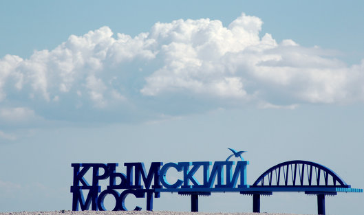

Республика Крым
Кры́мский полуо́стров (укр. Кримський півострів, крымскотат. Qırım yarımadası, Къырым ярымадасы), ранее Таври́да (греч. Ταυρίδα) — полуостров в северной части Чёрного моря, с северо-востока омывается Азовским морем.
Бо́льшая часть полуострова с 2014 года является объектом территориальных разногласий между Россией, контролирующей её с марта этого года, и Украиной. Большинство государств — членов ООН продолжает рассматривать весь Крым как часть Украины.


С античных времён за полуостровом закрепилось название Таврика (греч. Ταυρικῆ), произошедшее от имени древнейших племён тавров, населявших южную часть Крыма. Современное название «Крым» стало широко использоваться только после XIII века, предположительно, по названию города «Къырым», который после захвата Северного Причерноморья монголами являлся резиденцией наместника хана Золотой Орды. Возможно также, что название «Крым» произошло от Перекопского перешейка (русское слово «перекоп» — это перевод тюркского слова «qirim», которое означает «ров»). В период существования генуэзских колоний Тавриды (1266—1475), полуостров назывался Оффицией Романии, а также Генуэзской Газарией, к середине XV века ввиду большого числа армян, составлявших к 1400 году 2/3 числа всех жителей владений Генуэзской республики в Крыму, полуостров в источниках того времени стали именовать Морской Арменией (Armenia Maritime) или Большой Арменией (Armenia Magna). Этимология слова «Къырым» неясна, и существует несколько версий его происхождения: Искажение древнего названия полуострова Киммерия (лат. Cimmerium) От древнетюркского слова *qurum («защита, оборона») От древнегреческого κρημνοί (кремной, «скалы») С XV века Крымский полуостров стали называть Таврией, а после его присоединения в 1783 году к России — Тавридой. Так же именовали и всё Северное Причерноморье — северное побережье Чёрного и Азовского морей с прилегающими степными территориями.